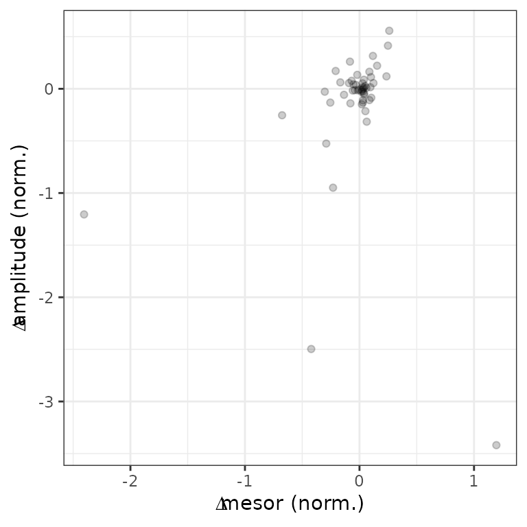

Quantifying differential rhythmicity between conditions
Source:vignettes/differential-rhythmicity.Rmd
differential-rhythmicity.RmdIntroduction
Here we show how to use limorhyde2 to quantify rhythmicity and differential rhythmicity in data from multiple conditions. The data are based on liver samples from wild-type and Rev-erb\(\alpha/\beta\) double-knockout mice (Cho et al. 2012 and GSE34018).
Load packages
library('data.table')
library('ggplot2')
library('limorhyde2')
library('qs')
# doParallel::registerDoParallel() # register a parallel backend to minimize runtime
theme_set(theme_bw())Load the data
The expression data are in a matrix with one row per gene and one column per sample. The metadata are in a table with one row per sample. To save time and space, the expression data include only a subset of genes.
y = qread(system.file('extdata', 'GSE34018_data.qs', package = 'limorhyde2'))
y[1:5, 1:5]
#> GSM840516 GSM840517 GSM840518 GSM840519 GSM840520
#> 12686 11.962830 11.923338 11.098814 10.958933 9.256413
#> 13170 8.989743 9.132606 12.381036 12.441759 14.766070
#> 26897 11.515292 11.625519 10.579969 10.601969 11.096489
#> 11287 7.985859 7.930935 7.674688 7.899531 7.768563
#> 11731 8.481372 8.114623 8.058194 8.144267 8.152959
metadata = qread(system.file('extdata', 'GSE34018_metadata.qs', package = 'limorhyde2'))
metadata
#> sample cond time
#> 1: GSM840516 wild-type 0
#> 2: GSM840517 wild-type 0
#> 3: GSM840518 wild-type 4
#> 4: GSM840519 wild-type 4
#> 5: GSM840520 wild-type 8
#> 6: GSM840521 wild-type 8
#> 7: GSM840522 wild-type 12
#> 8: GSM840523 wild-type 12
#> 9: GSM840524 wild-type 16
#> 10: GSM840525 wild-type 16
#> 11: GSM840526 wild-type 20
#> 12: GSM840527 wild-type 20
#> 13: GSM840504 knockout 0
#> 14: GSM840505 knockout 0
#> 15: GSM840506 knockout 4
#> 16: GSM840507 knockout 4
#> 17: GSM840508 knockout 8
#> 18: GSM840509 knockout 8
#> 19: GSM840510 knockout 12
#> 20: GSM840511 knockout 12
#> 21: GSM840512 knockout 16
#> 22: GSM840513 knockout 16
#> 23: GSM840514 knockout 20
#> 24: GSM840515 knockout 20
#> sample cond timeFit linear models and compute posterior fits
Because the samples were acquired at relatively low temporal resolution (every 4 h), we use three knots instead of the default four, which reduces the flexibility of the spline curves. We specify condColname so getModelFit() knows to fit a differential rhythmicity model.
fit = getModelFit(y, metadata, nKnots = 3L, condColname = 'cond')
fit = getPosteriorFit(fit)
#> - Computing 100 x 97 likelihood matrix.
#> - Likelihood calculations took 0.02 seconds.
#> - Fitting model with 97 mixture components.
#> - Model fitting took 0.03 seconds.
#> - Computing posterior matrices.
#> - Computation allocated took 0.01 seconds.
#> - Computing 100 x 89 likelihood matrix.
#> - Likelihood calculations took 0.02 seconds.
#> - Fitting model with 89 mixture components.
#> - Model fitting took 0.03 seconds.
#> - Computing posterior matrices.
#> - Computation allocated took 0.00 seconds.Get rhythm statistics
Next, we use the posterior fits to compute rhythm statistics for each gene in each condition.
rhyStats = getRhythmStats(fit)
print(rhyStats, nrows = 10L)
#> cond feature peak_phase peak_value trough_phase trough_value
#> 1: wild-type 12686 0.0000000 11.818169 10.4696885 8.816498
#> 2: wild-type 13170 9.4546039 15.050809 22.1710237 9.038763
#> 3: wild-type 26897 17.0238101 12.318391 4.9244619 10.758073
#> 4: wild-type 11287 20.8264882 7.907910 6.7998533 7.783516
#> 5: wild-type 11731 17.4915605 8.242971 5.9198397 8.219672
#> ---
#> 196: knockout 382038 17.4711564 8.109094 0.3233662 7.999535
#> 197: knockout 404323 18.5465691 8.144650 10.6388879 8.019490
#> 198: knockout 435684 0.4068318 8.287644 17.2735598 8.250160
#> 199: knockout 622408 18.0525292 7.984691 9.4949875 7.843422
#> 200: knockout 110599566 5.6949242 8.959549 22.7795931 8.950054
#> peak_trough_amp mesor
#> 1: 3.00167100 10.368427
#> 2: 6.01204602 12.018767
#> 3: 1.56031721 11.675870
#> 4: 0.12439445 7.854743
#> 5: 0.02329908 8.233332
#> ---
#> 196: 0.10955882 8.056860
#> 197: 0.12516051 8.081646
#> 198: 0.03748449 8.270927
#> 199: 0.14126886 7.906518
#> 200: 0.00949479 8.953484Get differential rhythm statistics
We can now calculate the rhythmic differences for each gene between any two conditions, here between wild-type and knockout.
diffRhyStats = getDiffRhythmStats(fit, rhyStats)
print(diffRhyStats, nrows = 10L)
#> feature cond1 cond2 mean_mesor mean_peak_trough_amp diff_mesor
#> 1: 101476 wild-type knockout 10.283367 0.364345854 0.408828899
#> 2: 104662 wild-type knockout 8.559772 0.152371765 -0.112664862
#> 3: 107652 wild-type knockout 10.572694 0.278928889 0.006764681
#> 4: 109359 wild-type knockout 10.607649 0.066887444 0.024133810
#> 5: 110599566 wild-type knockout 8.938463 0.166092873 0.030043525
#> ---
#> 96: 76629 wild-type knockout 7.917007 0.006813981 -0.055253204
#> 97: 78174 wild-type knockout 7.812249 0.054345851 0.010492566
#> 98: 80782 wild-type knockout 7.938937 0.011599640 0.025068427
#> 99: 93671 wild-type knockout 9.210232 0.927052285 -0.131538239
#> 100: 97064 wild-type knockout 8.214559 0.013931745 -0.081584942
#> diff_peak_trough_amp diff_peak_phase diff_trough_phase diff_rhy_dist
#> 1: -0.023692359 0.2448824542 -1.3251988 0.033259162
#> 2: -0.276891243 -5.5052720732 0.3071651 0.289348444
#> 3: -0.424068696 -8.9414363544 -0.4467861 0.539674818
#> 4: -0.109914276 -2.3356975738 -0.7252431 0.112285161
#> 5: -0.313196165 -9.4920035152 -6.3244613 0.330262422
#> ---
#> 96: 0.003113699 -0.4067435019 -6.9151571 0.003192749
#> 97: 0.083646357 1.6974742269 -2.7747427 0.085033285
#> 98: -0.012614515 2.8474965282 -2.8473846 0.014470601
#> 99: 0.861383159 -3.4317077329 -11.7138241 1.118181583
#> 100: -0.007934786 0.0000926305 -2.8475403 0.007934786We can examine the distributions of the statistics in various ways, such as ranking genes by difference in peak-to-trough amplitude (no p-values necessary) or plotting difference in peak-to-trough amplitude vs. difference in mean expression.
print(diffRhyStats[order(diff_peak_trough_amp)], nrows = 10L)
#> feature cond1 cond2 mean_mesor mean_peak_trough_amp diff_mesor
#> 1: 13170 wild-type knockout 12.616280 4.3053868 1.195026238
#> 2: 12686 wild-type knockout 10.157657 1.7646016 -0.421541648
#> 3: 26897 wild-type knockout 10.473462 0.9911486 -2.404815809
#> 4: 20211 wild-type knockout 13.264762 0.6316245 -1.141797421
#> 5: 107652 wild-type knockout 10.572694 0.2789289 0.006764681
#> ---
#> 96: 18378 wild-type knockout 7.930639 0.1574778 -0.044696431
#> 97: 58229 wild-type knockout 7.962831 0.1183498 -0.029117990
#> 98: 14254 wild-type knockout 9.872135 0.1360597 0.040621775
#> 99: 18727 wild-type knockout 8.317322 0.2053341 0.136995727
#> 100: 93671 wild-type knockout 9.210232 0.9270523 -0.131538239
#> diff_peak_trough_amp diff_peak_phase diff_trough_phase diff_rhy_dist
#> 1: -3.4133184 -0.5117968 0.00847549 3.4541007
#> 2: -2.4741388 -6.1622754 -0.44523739 3.0696616
#> 3: -1.1383372 1.2932498 6.00647640 1.1707130
#> 4: -0.5655427 -2.4497118 -9.53213782 0.6682857
#> 5: -0.4240687 -8.9414364 -0.44678606 0.5396748
#> ---
#> 96: 0.2047459 -0.4564273 7.86751964 0.2052440
#> 97: 0.2084246 -5.5907663 -2.08335892 0.2214968
#> 98: 0.2228126 -5.3957837 -6.15782348 0.2447962
#> 99: 0.3745667 10.9934870 4.88147103 0.4100721
#> 100: 0.8613832 -3.4317077 -11.71382406 1.1181816
ggplot(diffRhyStats) +
geom_point(aes(x = diff_mesor, y = diff_peak_trough_amp), alpha = 0.2) +
labs(x = bquote(Delta*'mesor (norm.)'), y = bquote(Delta*'amplitude (norm.)'))
Get observed and fitted time-courses
We can compute the expected measurements for one or more genes at one or more time-points in each condition, which correspond to the fitted curves. Here we plot the posterior fits and observed expression for three genes (converting from gene id to gene symbol).
genes = data.table(
id = c('13170', '12686', '26897'),
symbol = c('Dbp', 'Elovl3', 'Acot1'))
measFit = getExpectedMeas(fit, times = seq(0, 24, 0.5), features = genes$id)
measFit[genes, symbol := i.symbol, on = .(feature = id)]
print(measFit, nrows = 10L)
#> time cond feature value symbol
#> 1: 0 wild-type 13170 9.387659 Dbp
#> 2: 0 wild-type 12686 11.818169 Elovl3
#> 3: 0 wild-type 26897 11.578047 Acot1
#> 4: 0 knockout 13170 11.938201 Dbp
#> 5: 0 knockout 12686 9.832164 Elovl3
#> ---
#> 290: 24 wild-type 12686 11.818169 Elovl3
#> 291: 24 wild-type 26897 11.578047 Acot1
#> 292: 24 knockout 13170 11.938201 Dbp
#> 293: 24 knockout 12686 9.832164 Elovl3
#> 294: 24 knockout 26897 9.204626 Acot1Next we combine the observed expression data and metadata. The curves show how limorhyde2 is able to fit non-sinusoidal rhythms.
measObs = mergeMeasMeta(y, metadata, features = genes$id)
measObs[genes, symbol := i.symbol, on = .(feature = id)]
print(measObs, nrows = 10L)
#> sample cond time feature meas symbol
#> 1: GSM840504 knockout 0 13170 11.669138 Dbp
#> 2: GSM840504 knockout 0 12686 9.705361 Elovl3
#> 3: GSM840504 knockout 0 26897 8.654624 Acot1
#> 4: GSM840505 knockout 0 13170 11.877697 Dbp
#> 5: GSM840505 knockout 0 12686 9.611530 Elovl3
#> ---
#> 68: GSM840526 wild-type 20 12686 10.911935 Elovl3
#> 69: GSM840526 wild-type 20 26897 12.486105 Acot1
#> 70: GSM840527 wild-type 20 13170 9.749365 Dbp
#> 71: GSM840527 wild-type 20 12686 11.075636 Elovl3
#> 72: GSM840527 wild-type 20 26897 12.352601 Acot1
ggplot() +
facet_wrap(vars(symbol), scales = 'free_y', nrow = 1) +
geom_line(aes(x = time, y = value, color = cond), data = measFit) +
geom_point(aes(x = time %% 24, y = meas, color = cond, shape = cond),
size = 1.5, data = measObs) +
labs(x = 'Zeitgeber time (h)', y = 'Expression (norm.)',
color = 'Condition', shape = 'Condition') +
scale_x_continuous(breaks = seq(0, 24, 4)) +
scale_color_brewer(palette = 'Dark2') +
scale_shape_manual(values = c(21, 23)) +
theme(legend.position = 'bottom')